Actividades
Vanguard
El Vanguard es una actividad desarrollada completamente en inglés, en la que un experto en Física aborda un tema relevante y de vanguardia en el área. Su objetivo es fortalecer las habilidades de comprensión y comunicación en inglés dentro del ámbito científico, además de exponer a los asistentes a conceptos avanzados en un contexto académico global.
Ver galería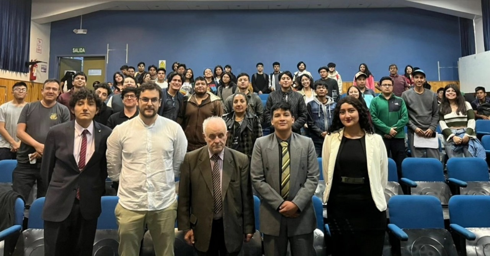
Café científico
El Café Científico es una actividad de divulgación en la que se abordan temas variados y cercanos a la ciencia en un ambiente relajado y participativo. Guiado por un estudiante, el evento fomenta el debate y el intercambio de ideas entre los asistentes, permitiendo explorar la ciencia desde perspectivas multidisciplinarias e innovadoras.
Ver galería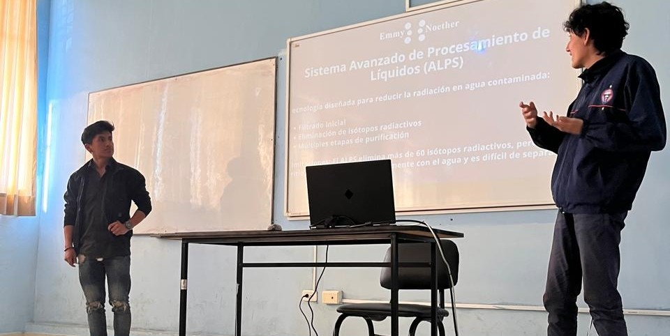
Fería de clubes
La Feria de Clubes es un evento en el que se presentan los distintos clubes de la carrera de Física con el fin de visibilizar sus actividades y atraer nuevos miembros y colaboradores. Durante la feria, los clubes exponen sus proyectos, comparten experiencias y muestran el impacto de su trabajo en la comunidad estudiantil.
Ver galería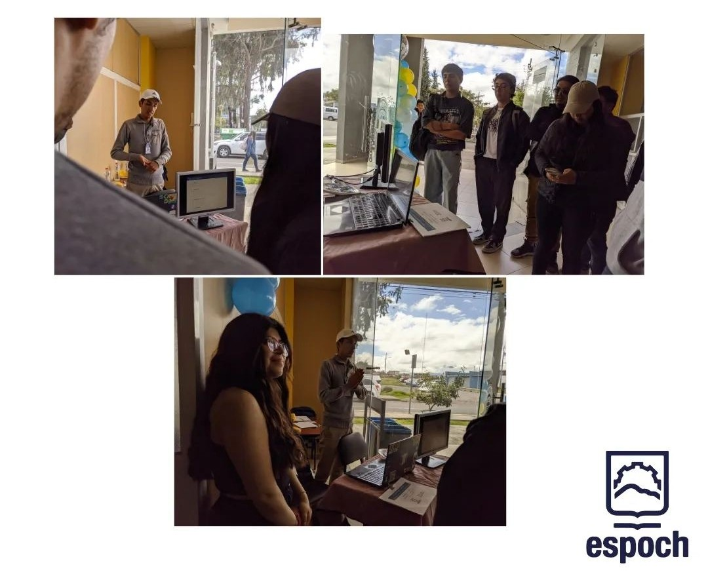
TOAA
El Taller de Observación Astronómica (TOAA) es una actividad práctica que permite a los participantes explorar el cielo nocturno a través de telescopios y otros instrumentos de observación. Además de la observación directa de astros y fenómenos celestes, se brindan explicaciones científicas sobre los cuerpos observados y su importancia en la astronomía.
Ver galería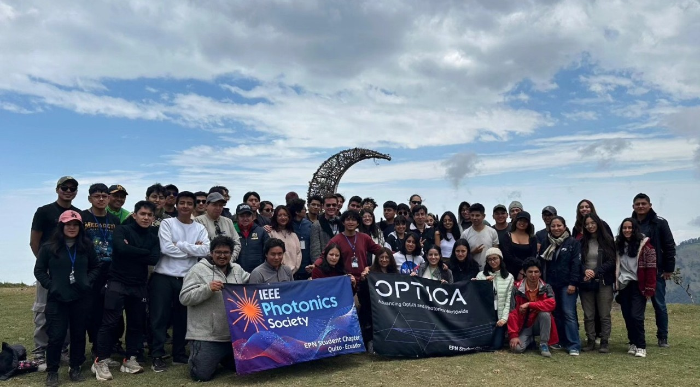
Experimentos abiertos
Los Experimentos Abiertos conforman una semana dedicada a la exposición de distintos experimentos científicos al público en general. Durante esta actividad, los asistentes pueden interactuar con demostraciones experimentales y recibir explicaciones detalladas sobre los principios físicos que las sustentan, fomentando la curiosidad y el aprendizaje a través de la experiencia.
Ver galería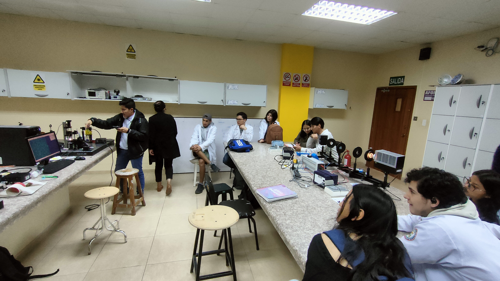
Concurso de integrales
El Concurso de Integrales es una competencia en la que los participantes deben resolver integrales de distintos niveles de dificultad en un tiempo determinado. Su objetivo es poner a prueba las habilidades matemáticas de los concursantes, promover el razonamiento lógico y generar un ambiente de sana competencia académica entre los estudiantes.
Ver galería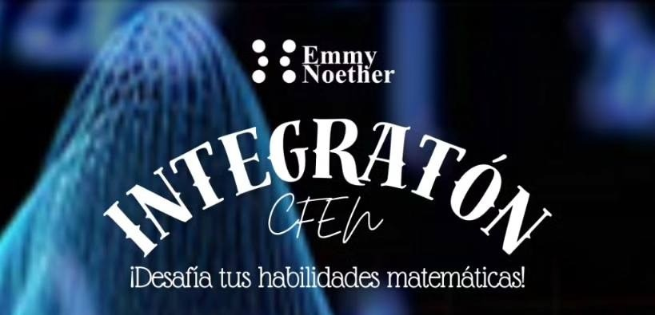
Exposición de graduados
La Exposición de Graduados es un espacio en el que los egresados de la carrera de Física presentan sus trabajos de tesis a los estudiantes. Esta actividad permite conocer las diversas líneas de investigación dentro de la carrera, brindar orientación a quienes están por desarrollar sus propios proyectos y fomentar el intercambio de experiencias entre distintas generaciones de físicos.
Ver galería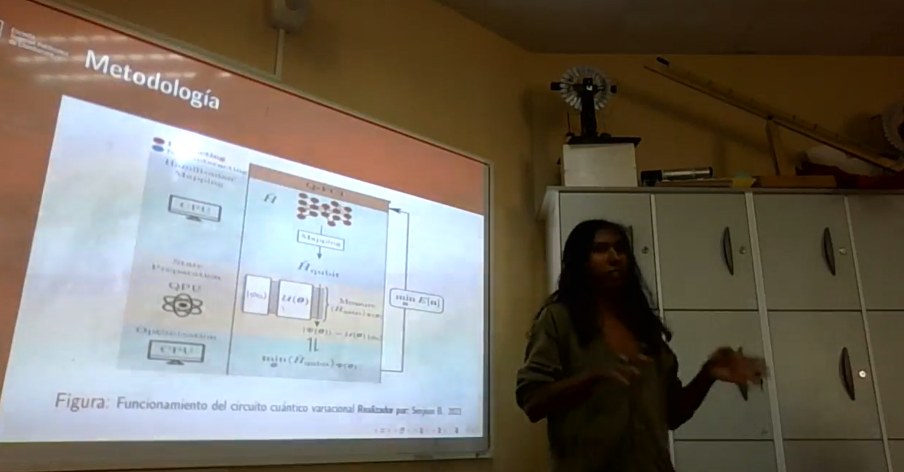
Intercambio entre universidades
El Intercambio entre Universidades es un espacio diseñado para el intercambio de conocimientos y experiencias entre estudiantes y docentes de distintas universidades. A través de charlas, talleres y actividades colaborativas, se fomenta la interacción entre comunidades académicas, fortaleciendo el aprendizaje conjunto y la creación de redes de contacto.
Ver galería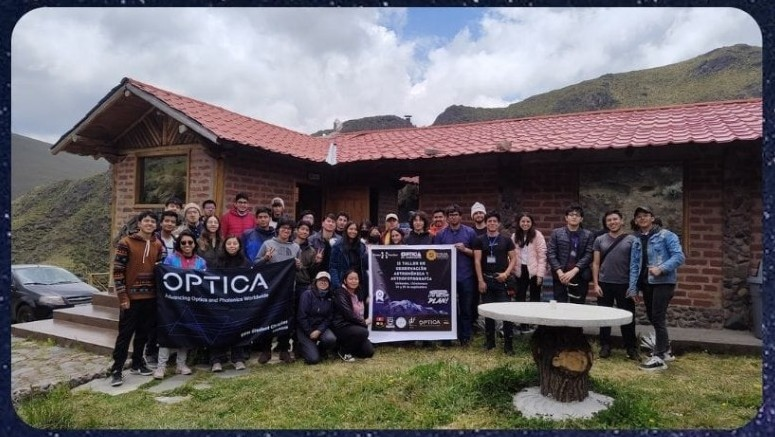
Torneo de Budokai Tenkaichi
El Torneo de Budokai Tenkaichi es un evento en el que los participantes compiten en el videojuego Dragon Ball Budokai Tenkaichi 3. Más allá del aspecto recreativo, esta actividad fortalece la convivencia entre los miembros del club, promoviendo la integración y el sentido de comunidad a través de una experiencia de entretenimiento compartida.
Ver galería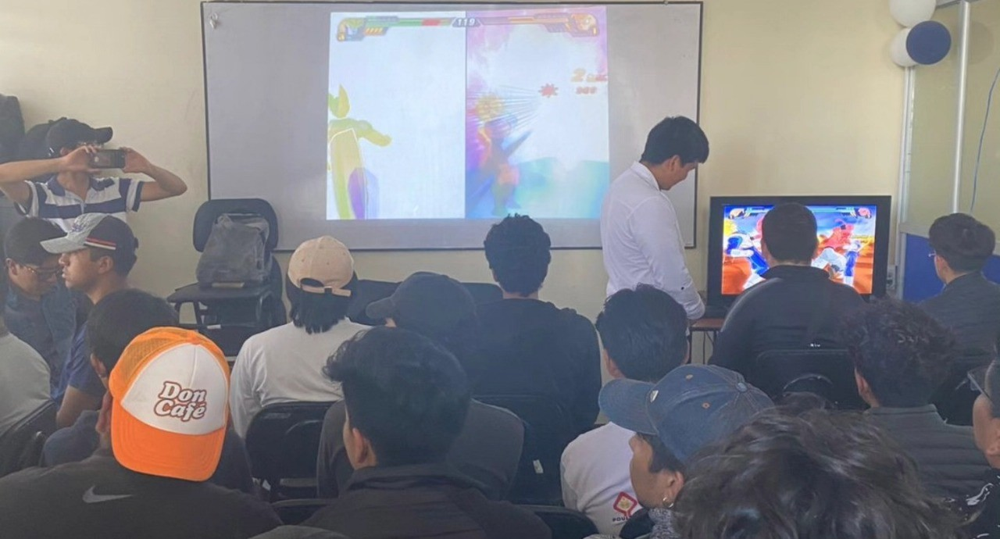
Exposición de un paper de actualidad
La Exposición de un Paper de Actualidad es un evento en el que se analiza y discute un artículo científico reciente de relevancia en el campo de la Física. Durante la exposición, se explican los conceptos clave, la metodología empleada y las implicaciones del estudio, promoviendo el pensamiento crítico y la actualización en avances científicos.
Ver galería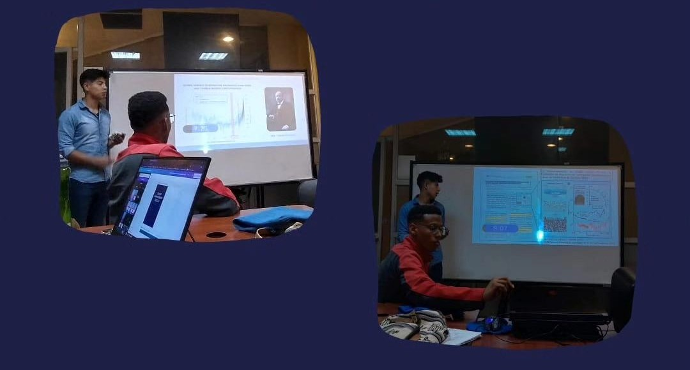
Vídeos divulgativos
Los videos divulgativos de Física son una ventana al asombroso mundo de la ciencia, explicando conceptos complejos de manera clara y accesible. A través de estos contenidos, buscamos despertar la curiosidad, inspirar nuevas ideas y acercar la Física a todos, mostrando su impacto en nuestra vida diaria y su belleza como disciplina.
Ver galería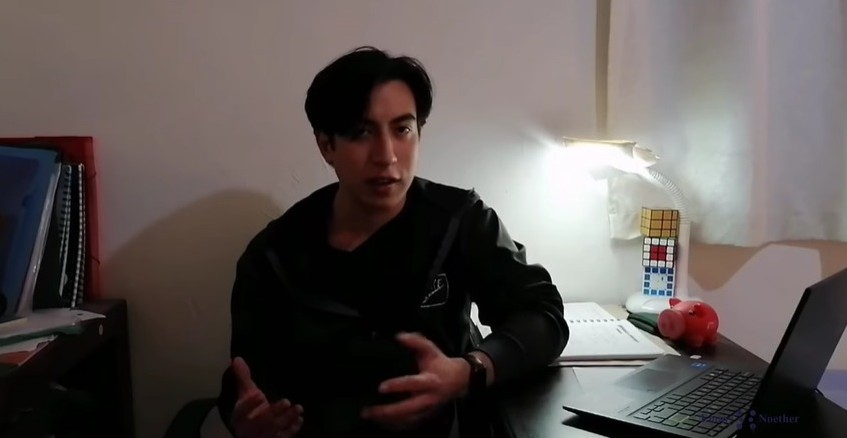
Cursos académicos y vacacionales a estudiantes o comunidades
Nuestros cursos académicos y vacacionales están diseñados para fortalecer conocimientos en Física y Matemáticas de forma dinámica y efectiva. Ya sea como preparación para el semestre o para profundizar en temas específicos, estos cursos ofrecen un espacio de aprendizaje colaborativo que impulsa el crecimiento académico y personal de cada estudiante.
Ver galería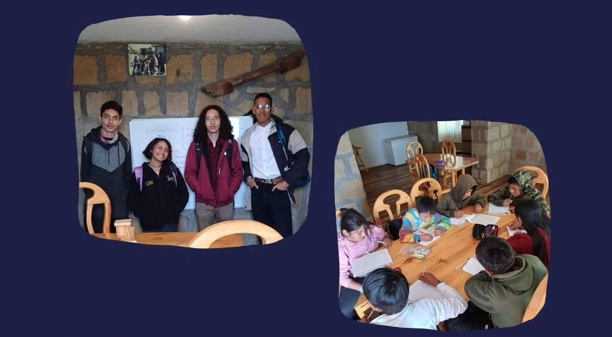
Lecture
La Lecture es una exposición tipo clase impartida por estudiantes o profesionales sobre un tema de interés para la comunidad de Física. Su propósito es complementar la formación académica con explicaciones claras y estructuradas sobre conceptos fundamentales o aplicaciones avanzadas de la disciplina.
Ver galería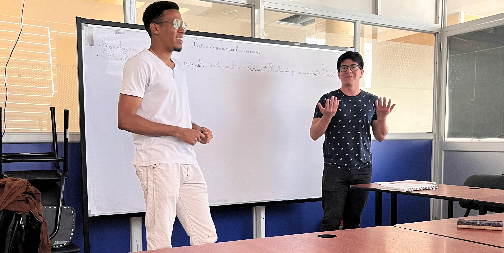